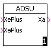

und 5 Subtraktionseingängen

ABFEUG ABSFEU ABSWER ADD2 ADSU ATRA CHS ENTHA ENTHAG INTE LIMIT MAX MIN MULDI MULK2 MULT PT1 SUB2 TTZEIT
Der Baustein berechnet die absolute Feuchte in g Wasser pro kg trockener Luft im
Bereich -20 ... +80 Grad Celsius.
Umgebungsdruck= Pn (Normdruck) = 101325 Pa.
Nimmt man 2% Fehler in Kauf, dann gilt sogar Pn = 105 Pa.
(Der Baustein ist erst ab GK-MICASVersionen > 2.6 bzw. > 7.8 nutzbar)
| Parametername | Typ | Bedeutung |
|---|---|---|
| relFeuchte | Float | relative Feuchte rF in % |
| Temperatur | Float | Temperatur T in °C |
| Druck | Float | Umgebungsdruck P in Pa |
| Xa | Float | absolute Feuchte in g H2O / kg trockener Luft |
Der Baustein berechnet die absolute Feuchte x in kg Wasser pro kg Luft im
Bereich -20...+80 Grad Celsius.
Umgebungsdruck = Pn (Normdruck) = 101325 Pa.
Nimmt man 2% Fehler in Kauf, dann gilt sogar Pn = 105 Pa.

| Parametername | Typ | Bedeutung |
|---|---|---|
| relFeuchte | Float | relative Feuchte rF in % |
| Temperatur | Float | Temperatur in T °C |
| Druck | Float | Umgebungsdruck P in Pa |
| Xa | Float | absolute Feuchte x in kg H2O / kg trockener Luft |
Es wird der Absolutwert (Betrag) der am Eingang Xe liegenden Variablen gebildet und der Variablen am Ausgang Xa zugeordnet.
Xa = |Xe|
| Parametername | Typ | Bedeutung |
|---|---|---|
| Xe | Float | Eingangswert Xe |
| Xa | Float | Betrag der Variablen am Eingang Xe |
Die Variablen an den Eingängen Xe1 und Xe2 werden addiert und das Ergebnis der Variablen am Ausgang Xa zugewiesen.
Xa = Xe1 + Xe2

| Parametername | Typ | Bedeutung |
|---|---|---|
| A | Float | Eingangs-Variable 1 |
| B | Float | Eingangs-Variable 2 |
| Xa | Float | Summe der Eingangs-Variablen |
Der Baustein besitzt 19 Eingänge, von denen mindestens zwei benutzt werden
müssen.
Jeder der ursprünglich positiven Eingänge kann zu einem negativen Eingang
verändert werden.
Die Variablen an den positiven Eingängen werden miteinander addiert und die Variablen an den negativen Eingängen von dem Zwischenergebnis dann subtrahiert. Das Ergebnis wird der Variablen am Ausgang Xa zugewiesen
Anzahl der zu addierenden Eingänge N und zu subtrahierenden Eingänge M:
0 <= N <= 15
0 <= M <= 15
| ADSU Mindestgröße | ADSU mit 7 Additions- und 5 Subtraktionseingängen |
|  | |
| Parametername | Typ | Bedeutung |
|---|---|---|
| XePlus 1 | Float | positive Eingangs-Variable 1 |
| XePlus 2 | Float | positive Eingangs-Variable 2 |
| : | : | : |
| XePlus N | Float | positive Eingangs-Variable N |
| XeMinus 1 | Float | negative Eingangs-Variable 1 |
| XeMinus 2 | Float | negative Eingangs-Variable 2 |
| : | : | : |
| XeMinus M | Float | negative Eingangs-Variable M |
| Xa | Float | Summe aller Eingangs-Variablen |
Der Wert der am Eingang Xe liegenden Variablen wird der Variablen am Ausgang Xa zugewiesen. Diese Funktion wird eingesetzt, um einer Float-Variablen einen anderen Namen zuordnen zu können.
| Parametername | Typ | Bedeutung |
|---|---|---|
| Xe | Float | Eingang Xe |
| Xa | Float | Ausgang Xa |
Die am Eingang Xe liegende Variable wird mit -1 multipliziert und der Variablen am Ausgang Xa zugewiesen.
Xa = -1 * Xe
| Parametername | Typ | Bedeutung |
|---|---|---|
| Xe | Float | Eingangs-Variable Xe |
| Xa | Float | Rechen-Ergebnis Xa = -1 * Xe |
Der Baustein berechnet aus der absoluten feuchte x und der Temperatur T die Enthalpie H in kJ/kg.
Hinweis:
Die zur Berechnung benötigte absolute Feuchte x muß mit dem Baustein ABSFEU berechnet werden, da er am Eingang "absFeuchte" die absolute Feuchte x in kg Wasser pro kg trockener Luft benötigt.
| Parametername | Typ | Bedeutung |
|---|---|---|
| absFeuchte | Float | Absolute Feuchte x in kg Wasser / kg trockene Luft |
| Temperatur | Float | Temperatur T in °C |
| Enthalpie | Float | Enthalpie H in kJ/kg |
Der Baustein berechnet die Enthalpie H in kJ/kg. Die zur Berechnung benötigte absolute Feuchte x muß mit dem Baustein ABSFEUG berechnet werden, da er am Eingang "absFeuchte" die absolute Feuchte x in g Wasser pro kg trockener Luft benötigt.
Hinweis:
Dieser Baustein muß mit einem Baustein ABFEUG benutzt werden und
darf keinesfalls direkt von einem Baustein ABSFEU angesteuert werden!
Der Baustein ist erst ab GK-MICAS-Versionen > 2.6 bzw. > 7.8 nutzbar!
| Parametername | Typ | Bedeutung |
|---|---|---|
| absFeuchte | Float | Absolute Feuchte x in g Wasser/kg trockener Luft) |
| Tempeartur | Float | Temperatur T in °C |
| Enthalpie | Float | Enthalpie H in kJ/kg |
Es wird die Übertragungs-Funktion F(p)=1/(pT) realisiert. Der Baustein entspricht somit einem einfachen Integrierer, der am Ausgang Xa folgende Funktion liefert:
Xa = a + 1/Ti * ∫(Xe * dt)
Ti entspricht der durch die Variable am Eingang Ti vorgegebenen Integrationszeit in Sekunden, Xe der Variablen am Eingang Xe und a dem Anfangswert am Eingang "Setzwert". Der Setzwert wird nur übernommen, wenn die Variable am Eingang "Setzen" auf 1-Signal ist.
Hinweis:
Es muß gelten: Tz*10<Ti (Tz = Task-Zykluszeit). Ist diese Bedingung
nicht erfüllt, so erfolgt ein Eintrag im Fehlerspeicher des Betriebssystems.
| Parametername | Typ | Bedeutung |
|---|---|---|
| Xe | Float | Eingangs-Variable Xe |
| Ti | Float | Integrationszeit Ti in Sekunden |
| Setzen | Word | Setzeingang (1=Setzen auf Setzwert) |
| Setzwert | Float | Setzwert (Anfangswert a) Ausgabe wenn Setzen = 1 |
| Xa | Float | Ausgangswert Xa |
Die Variable am Eingang Xe wird auf den am Eingang XeOG liegenden oberen Grenzwert bzw. auf den am Eingang XeUG liegenden unteren Grenzwert begrenzt und über den Ausgang Xa ausgegeben.
Voraussetzung: UG<OG
Es gelten folgende Bedingungen:
| Bedingung | Ausgabe |
|---|---|
| Xe < XeUG | Xa = XeUG |
| XeUG < Xe < XeOG | Xa = Xe |
| Xe > XeOG | Xa = XeOG |
| Parametername | Typ | Bedeutung |
|---|---|---|
| Xe | Float | Eingangs-Variable Xe |
| XeOG | Float | Oberer Grenzwert XeOG |
| XeUG | Float | Unterer Grenzwert XeUG |
| Xa | Float | Ausgangswert Xa |
Die Variable Xe mit dem größten Wert aller Variablen, die an den bis zu 15 Eingängen anliegen, wird der Variablen am Ausgang Xa zugewiesen. Der Baustein berücksichtigt das Vorzeichen der Eingangswerte.
| MAX-Baustein Mindestgröße |
Maximalauswahl aus 15 Eingängen |
| Parametername | Typ | Bedeutung |
|---|---|---|
| Xe 1 | Float | Eingangswert Xe 1 |
| Xe 2 | Float | Eingangswert Xe 2 |
| : | : | : |
| Xe n | Float | Eingangswert Xe n |
| Xa | Float | Ausgangswert Xa |
Die Variable Xe mit dem kleinsten Wert aller Variablen, die an den bis zu 15 Eingängen anliegen, wird der Variablen Xa am Ausgang zugewiesen. Der Baustein berücksichtigt das Vorzeichen der Eingangswerte.
| MIN-Baustein Mindestgröße |
Minimalauswahl aus 15 Eingängen |
| Parametername | Typ | Bedeutung |
|---|---|---|
| Xe 1 | Float | Eingangswert Xe 1 |
| Xe 2 | Float | Eingangswert Xe 2 |
| : | : | : |
| Xe n | Float | Eingangswert Xe n |
| Xa | Float | Ausgangswert Xa |
Die am Eingang Xe1 liegende Variable wird mit der am Eingang Xe2 liegenden Variablen multipliziert und dann durch die am Eingang Xe3 liegende Variable dividiert. Das Ergebnis wird der Variablen am Ausgang Xa zugewiesen.
Xa = Xe1 * Xe2 / Xe3

| Parametername | Typ | Bedeutung |
|---|---|---|
| Xe1 | Float | Eingangswert Xe1 |
| Xe2 | Float | Eingangswert Xe2 |
| Xe3 | Float | Eingangswert Xe3 |
| Xa | Float | Ausgangswert Xa = Xe1 * Xe2 / Xe3 |
Der Wert der Variablen am Eingang Xe wird mit 2 multipliziert und das Ergebnis der Variablen am Ausgang Xa zugewiesen.
Xa = Xe * 2
Hinweis:
Dieser Baustein arbeitet besonders
schnell und sollte deshalb bei einer Multiplikation mit 2 benutzt werden.
| Parametername | Typ | Bedeutung |
|---|---|---|
| Xe | Float | Eingangwert Xe |
| Xa | Float | Ausgangwert Xa |
Der Wert der Variablen am Eingang Xe1 wird mit dem Wert der Variablen am Eingang Xe2 multipliziert und das Ergebnis der Variablen am Ausgang Xa zugewiesen.
Xa = Xe1 * Xe2
| Parametername | Typ | Bedeutung |
|---|---|---|
| Xe1 | Float | Eingangwert Xe1 |
| Xe2 | Float | Eingangwert Xe2 |
| Xa | Float | Ausgangwert Xa = Xe1 * Xe2 |
Das Ausgangssignal Xa läuft nach einer e-Funktion gegen den am Eingang Xe
liegenden Wert. Der Baustein stellt somit einen Tiefpaß erster Ordnung dar mit
der Übertragungs-Funktion
F(p) = 1 / (1 + pT1)
Die am Eingang T1 liegende Variable enthält die wirksame Zeitkonstante in Sekunden. Es muß gelten Tz *10 < T1 (Tz=Task-Zykluszeit), anderenfalls erfolgt ein Eintrag im Fehlerspeicher des Betriebssystems.
| Parametername | Typ | Bedeutung |
|---|---|---|
| Xe1/td> | Float | Eingangwert Xe |
| T1 | Float | Zeitkonstante T1 in Sekunden |
| Xa | Float | Ausgangwert Xa = 1 / (1 + pT1) |
Der Wert der Variablen am Eingang XeMinus wird vom Wert der Variablen am Eingang XePlus subtrahiert und das Ergebnis der Variablen am Ausgang Xazugewiesen.
Xa = XePlus - XeMinus
| Parametername | Typ | Bedeutung |
|---|---|---|
| Xe | Float | Eingangwert XePlus |
| Xe | Float | Eingangwert XeMinus |
| Xa | Float | Ausgangwert Xa = XePlus - XeMinus |
Die Float-Variable am Eingang Xe erscheint um die über den Eingang "Totzeit" vorgegebene Zeit in Sekunden verzögert am Ausgang Xa.
| Parametername | Typ | Bedeutung |
|---|---|---|
| Xe | Float | Eingangwert Xe |
| Totzeit | Float | Verzögerungszeit |
| Xa | Float | Ausgangwert Xa |
WISAG Automatisierungstechnik GmbH & Co. KG
Ohmweg 11-15, D-68199 Mannheim
Stand: 04.02.2011 - Bearbeiter: HJ Werder